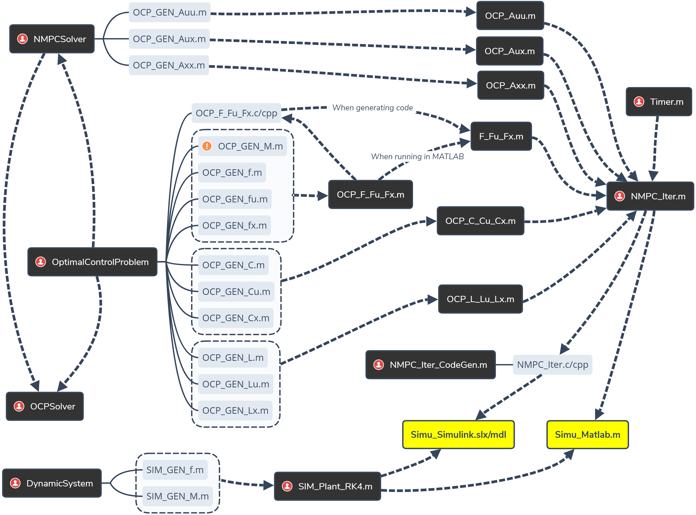
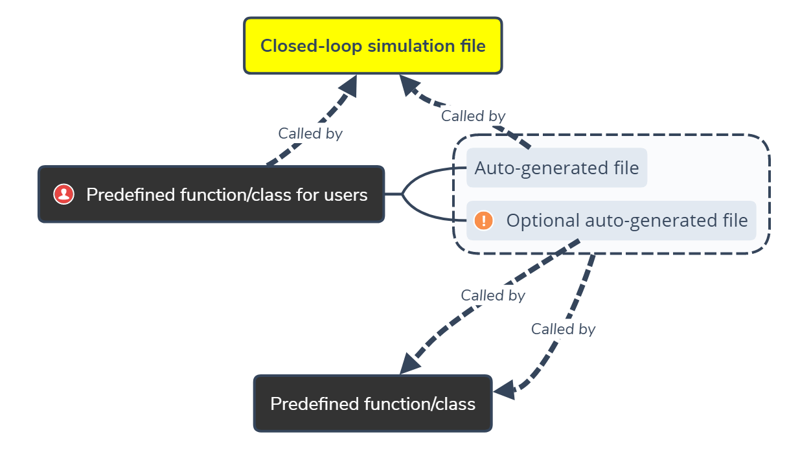

Workflow of ParNMPC
Preparation
- Choose a compiler that supports code generation with OpenMP by
mex -setup. - Edit
Timer.mto specify your own timer function.
NMPC Problem Formulation
Example
./NMPC_Problem_Definition.m
-
Formulate an OCP using Class
OptimalControlProblem% Create an OptimalControlProblem object OCP = OptimalControlProblem(muDim,... % constraints dim uDim,... % inputs dim xDim,... % states dim pDim,... % parameters dim (position reference) T,... % prediction horizon N); % num of discritization grids % Give names to x, u, p (optional) [~] = OCP.setStateName(~); [~] = OCP.setInputName(~); [~] = OCP.setParameterName(~); % Reset the prediction horizon T % (optional for variable horizon or nonuniform discretization) OCP.setT(~); % Set the dynamic function f OCP.setf(~); % Set the matrix M (optional for, e.g., Lagrange model) OCP.setM(~); % Set the equality constraint function C (optional) OCP.setC(~); % Set the cost function L OCP.setL(~); % Set the bound constraints (optional) OCP.setUpperBound('u',~); OCP.setLowerBound('u',~); OCP.setUpperBound('x',~); OCP.setLowerBound('x',~); % Set the polytopic constraint G (optional) OCP.setG(~); OCP.setUpperBound('G',~); OCP.setLowerBound('G',~); % Generate necessary files OCP.codeGen();
-
Configrate the solver using Class
NMPCSolver% Create a NMPCSolver object nmpcSolver = NMPCSolver(OCP); % Configurate the Hessian approximation method nmpcSolver.setHessianApproximation(~); % Generate necessary files nmpcSolver.codeGen();
-
Solve the very first OCP for a given initial state and given parameters using Class
OCPSolver% Set the initial state x0 = [~]; % Set the parameters par = [~]; % Create an OCPSolver object ocpSolver = OCPSolver(OCP,nmpcSolver,x0,par); % Choose one of the following methods to provide an initial guess: % 1. init guess by input lambdaInitGuess = [~]; muInitGuess = [~]; uInitGuess = [~]; xInitGuess = [~]; % 2. init guess by interpolation [lambdaInitGuess,muInitGuess,uInitGuess,xInitGuess] = ... ocpSolver.initFromStartEnd(~); % 3. init guess from file [lambdaInitGuess,muInitGuess,uInitGuess,xInitGuess] = ... ocpSolver.initFromMatFile(~); % Solve the OCP [lambda,mu,u,x] = ocpSolver.OCPSolve(lambdaInitGuess,... muInitGuess,... uInitGuess,... xInitGuess,... methodm... maxIter); % Get the dependent variable LAMBDA LAMBDA = ocpSolver.getLAMBDA(x0,lambda,mu,u,x,par); % Check the cost % (optional) cost = ocpSolver.getCost(u,x,par); % Save to file for further use save GEN_initData.mat ... x0 lambda mu u x par LAMBDA ~
-
Define the controlled plant using Class
DynamicSystem(optional for simulation)% Create a DynamicSystem object plant = DynamicSystem(uDim,xDim,pDim); % Give names to x, u, p (optional) [~] = plant.setStateName(~); [~] = plant.setInputName(~); [~] = plant.setParameterName(~); % Set the dynamic function f plant.setf(~); % Set the matrix M (optional for, e.g., Lagrange model) plant.setM(~); % Generate necessary files plant.codeGen();
Configuration Table:
| Configurable discretization method | Configurable Hessian approximation method | |
|---|---|---|
M enabled |
'Euler' |
'GaussNewton' |
M disabled |
'Euler', 'RK4' |
'Newton', 'GaussNewton' when 'Euler';'GaussNewton' when 'RK4'; |
Code Generation and Deployment
MATLAB
Here, assume your closed-loop simulation is performed in a m-file, i.e., NMPC_Iter is used to calculate the optimal control input and SIM_Plant_RK4 is used to simulate the controlled plant.
Example
./Simu_Matlab.m
Code generation
Assume that you have run NMPC_Problem_Formulation.m.
Next, the code generation process using the MATLAB Coder App for this simulation is shown.
-
Open the MATLAB Coder App.
-
Select
Simu_Matlab.m. -
Click the Generate button, and the C code will be automatically generated to
./codegen/lib/Simu_Matlab.
Deployment in Visual Studio
-
Create an empty Win32 Console Application project.
-
Change to Release x64 mode.
-
Add
*.hand*.cfiles in.\codegen\lib\Simu_Matlabto the project. -
Add
main.handmain.cin.\codegen\lib\Simu_Matlab\examplesto the project. -
Add
OCP_F_Fu_Fx.handOCP_F_Fu_Fx.cin.\codegen\lib\OCP_F_Fu_Fxto the project. -
Add directories
.\codegen\lib\Simu_Matlaband.\codegen\lib\OCP_F_Fu_Fxto Properties > C/C++ > General > Additional Include Directories. -
Properties > C/C++ > Language > Open MP Support: Yes (/openmp).
-
Compile and run.
Simulink
Here, assume your closed-loop simulation is performed in Simulink. You can call the generated C/C++ solver function NMPC_Iter directly to compute the optimal input.
Code generation
Example
./Simu_Simulink_Setup.m
-
Define the degree of parallelism:
DoP = ~; % degree of parallism: 1 = in serial, otherwise in parallel
-
Split \{\lambda_i\}_{i=1}^{N}, \{\mu_i\}_{i=1}^{N}, \{u_i\}_{i=1}^{N}, \{x_i\}_{i=1}^{N}, \{p_i\}_{i=1}^{N}, and \{\Lambda_i\}_{i=1}^{N} along the prediction horizon into
DoPpieces:sizeSeg = N/DoP; lambdaSplit = reshape(lambda, lambdaDim, sizeSeg,DoP); muSplit = reshape(mu, muDim, sizeSeg,DoP); uSplit = reshape(u, uDim, sizeSeg,DoP); xSplit = reshape(x, xDim, sizeSeg,DoP); pSplit = reshape(par, pDim, sizeSeg,DoP); LAMBDASplit = reshape(LAMBDA, xDim, xDim, sizeSeg,DoP);
-
Generate DLL and copy it to the working directory:
args_NMPC_Iter = {x0,... lambdaSplit,... muSplit,... uSplit,... xSplit,... pSplit,... LAMBDASplit}; NMPC_Iter_CodeGen('dll','C',args_NMPC_Iter); copyfile('./codegen/dll/NMPC_Iter/NMPC_Iter.dll');
Deployment
Example
./Simu_Simulink.slx
Note
This example shows how to call the generated C interface in Simulink using the coder.cevel function within a MATLAB Function block.
You can also call the C/C++ interface utilizing S-function.
-
Open the Simulation Target pane in the Simulink Editor: Simulation > Model Configuration Parameters > Simulation Target.
-
Add
#include "NMPC_Iter.h"to Insert custom C code in generated: Header file. -
Add the following directories to Additional Build Information: Include directories:
./codegen/dll/NMPC_Iter ./codegen/lib/OCP_F_Fu_Fx
-
Add
NMPC_Iter.libto Additional Build Information: Libraries. -
Call the generated C function in a
MATLAB Functionblock in Simulink:coder.ceval('NMPC_Iter',... x0,... coder.ref(lambdaSplit),... coder.ref(muSplit),... (optional) coder.ref(uSplit),... coder.ref(xSplit),... coder.ref(pSplit),... (optional) coder.ref(LAMBDASplit),... coder.wref(cost),... coder.wref(error),... coder.wref(timeElapsed));
File Dependency

Legend：

Advanced Functions
-
From the file dependency, you can even edit directly, e.g.,
OCP_F_Fu_Fx, to specify your own dynamic function F(u,x,p), and its Jacobians \partial F/\partial u and \partial F/\partial x rather than using the auto-generatedOCP_GEN_~.m. -
Currently, only the 4-th order Runge-Kutta method is provided to simulate the controlled plant. You can also program your own method by calling
SIM_GEN_~.m.